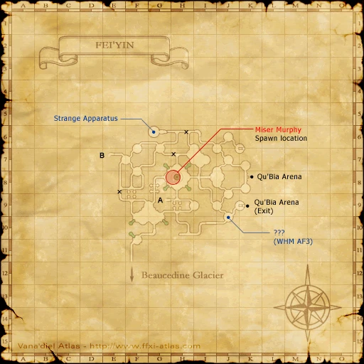
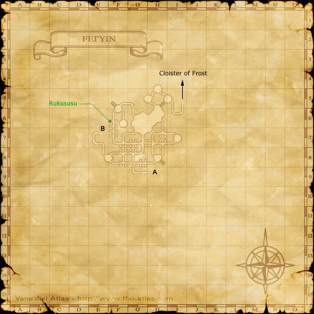
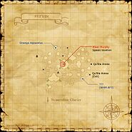

Description
Fei'Yin is a dungeon in Fauregandi.
Map

Involved in Quests / Missions
| Quest / Mission | Type | Starter | Location |
|---|---|---|---|
| Class Reunion | AF (SMN) | --- | Windurst Walls |
| Curses, Foiled A-Golem!? | Scroll | Shantotto | Windurst Walls (K-7) |
| Peace for the Spirit | AF (RDM) | Curilla | Chateau d'Oraguille (I-9) |
| Pieuje's Decision | AF (WHM) | --- | Chateau d'Oraguille (H-8) |
| Scattered into Shadow | AF (BST) | Brutus | Upper Jeuno (G-7) |
| Sorcery of the North | Scroll | Eperdur | Northern San d'Oria (M-7) |
| Tea with a Tonberry? | General | Sobane | Southern San d'Oria (D-6) |
| The Opo-opo and I | General | Lulupp | Kazham (G-7) |
| The First Meeting | AF (MNK) | Oggbi | Port Bastok (E-6) |
NPCs
| Name | Location | Type |
|---|---|---|
| Rukususu | F-6 | Quest NPC |
Notorious Monsters
| Name | Level | Drops | Steal | Family | Spawns | Notes |
|---|---|---|---|---|---|---|
| Capricious Cassie | 70 | Aiming Bracelets Amity Cape Cassie Earring Hi-Reraiser Malboro Vine Reraiser Vile Elixir Vile Elixir +1 Malboro Fiber | — |  MorbolsImage source MorbolsImage source | — | A, H |
| Eastern Shadow | 63 | Eurytos' Bow Revival Tree Root | — |  ShadowsImage source ShadowsImage source | — | A, L, H, HP |
| Goliath | 62 | Golem Shard Granite Mythril Ore | — |  GolemsImage source GolemsImage source | — | A, S, M |
| Northern Shadow | 63 | Executioner Revival Tree Root | — | ShadowsImage source | — | A, L, H, HP |
| Southern Shadow | 63 | Master Shield Revival Tree Root | — | ShadowsImage source | — | A, L, H, HP |
| Western Shadow | 63 | Cross-Counters Revival Tree Root | — | ShadowsImage source | — | A, L, H, HP |
Regular Monsters


Event Monsters
| Name | Level | Drops | Steal | Family | Spawns | Notes |
|---|---|---|---|---|---|---|
| Altedour I Tavnazia | 65 | Tavnazian Mask | — | ShadowsImage source | 1 | Spawned Quest: Pieuje's Decision; A, L, H, HP |
| Dabotz's Ghost | 53 | — | — |  GhostsImage source GhostsImage source | 1 | Spawned Quest: Scattered into Shadow; A, H, HP |
| Miser Murphy | 62 | — | — | GhostsImage source | 1 | Spawned Quest: Peace for the Spirit; A, H, HP |
Maps

Story walkthroughs in this area
| Story | Mission / quest |
|---|---|
| RoZ 5 | Headstone Pilgrimage |
| ACP 5 | Those Who Lurk in Shadows (I) |
| ACP 6 | Those Who Lurk in Shadows (II) |
| ASA 4 | Sugar-coated Directive |
References
External references describe their own server or retail rules. Documented Zenith changes take precedence.
Map credits: Map 1 — HorizonXI Wiki · Map 2 — HorizonXI Wiki. Original game maps © SQUARE ENIX; redrawn maps retain the credited authorship and license.


Additional level-75 reference



|
The city of legend where it is assumed the Ancients lived. Very few people that set foot in the city come back alive. Connecting AreasInvolved in Quests/Missions
| ||||||||||||||||||||||||||||||||||||||||||||||||||||||||
Coffer/Chest Contents
|
NPCs Found Here
Weather
| |||||||||||||||||
Notorious Monsters Found Here
|
Name |
Level |
Drops |
Steal |
Family |
Spawns |
Notes | |||||||
Altedour I Tavnazia
|
65 | Shadow | 1 | A, L, H, HP | |||||||||
| Capricious Cassie | 70 | Morbol | 1 | A, T(H) | |||||||||
Dabotz's Ghost
|
53 | Ghost | 1 | A, H, HP | |||||||||
| Eastern Shadow | 63 | Shadow | 1 | A, L, H, HP | |||||||||
| Goliath | 62 | Golem | 4 | A, S, M | |||||||||
Miser Murphy
|
62 | Ghost | 1 | A, H, HP | |||||||||
| Northern Shadow | 63 | Shadow | 1 | A, L, H, HP | |||||||||
| Southern Shadow | 63 | Shadow | 1 | A, L, H, HP | |||||||||
| Western Shadow | 63 | Shadow | 1 | A, L, H, HP | |||||||||
|
HP = Detects Low HP; M = Detects Magic; Sc = Follows by Scent; T(S) = True-sight; T(H) = True-hearing JA = Detects job abilities; WS = Detects weaponskills; Z(D) = Asleep in Daytime; Z(N) = Asleep at Nighttime | |||||||||||||
Mobs Found Here
|
Name |
Level |
Drops |
Steal |
Family |
Spawns |
Notes | |||||||
| Camazotz | 51 - 54 | Giant Bat | 17 | A, L, H | |||||||||
| Clockwork Pod | 41 - 43 | Magic Pot | 7 | A, M | |||||||||
| Colossus | 56 - 58 | Golem | 11 | A, S, M | |||||||||
Dark Elemental
|
56 - 58 | Elemental | 1 | M | |||||||||
| Droma | 54 - 56 | Magic Pot | 10 | A, M | |||||||||
| Drone | 41 - 43 | Doll | 15 | A, M | |||||||||
| Hellish Weapon | 61 - 63 | Evil Weapon | 8 | A, H, M | |||||||||
Ice Elemental
|
56 - 58 | Elemental | 1 | M | |||||||||
| Killing Weapon | 59 - 61 | Evil Weapon | 7 | A, H, M | |||||||||
| Ore Golem | 43 - 45 | Golem | 9 | A, S, M | |||||||||
| Revenant | 40 - 42 | Ghost | 14 | A, H, HP | |||||||||
Shadow
|
44 - 46 | Shadow | 8 | A, L, H, HP | |||||||||
Shadow
|
44 - 46 | Shadow | 8 | A, L, H, HP | |||||||||
Shadow
|
44 - 46 | Shadow | 8 | A, L, H, HP | |||||||||
Shadow
|
44 - 46 | Shadow | 8 | A, L, H, HP | |||||||||
Specter
|
55 - 58 | Shadow | 8 | A, L, H, HP | |||||||||
Specter
|
55 - 58 | Shadow | 8 | A, L, H, HP | |||||||||
Specter
|
55 - 58 | Shadow | 8 | A, L, H, HP | |||||||||
Specter
|
55 - 58 | Shadow | 8 | A, L, H, HP | |||||||||
| Talos | 53 - 55 | Doll | 10 | A, M | |||||||||
| Undead Bats | 38 - 40 | Bat Trio | 40 | A, H | |||||||||
| Underworld Bats | 50 - 52 | Bat Trio | 43 | A, L, H | |||||||||
| Utukku | 55 - 57 | Ghost | 14 | A, H, HP | |||||||||
| Vampire Bat | 40 - 42 | Giant Bat | 24 | A, L, H | |||||||||
|
HP = Detects Low HP; M = Detects Magic; Sc = Follows by Scent; T(S) = True-sight; T(H) = True-hearing JA = Detects job abilities; WS = Detects weaponskills; Z(D) = Asleep in Daytime; Z(N) = Asleep at Nighttime | |||||||||||||
Adapted from Eden Wiki: Fei'Yin · Contributors and history · CC BY-SA 4.0. Revision 45549. Layout, links and optional background text adapted for Zenith.